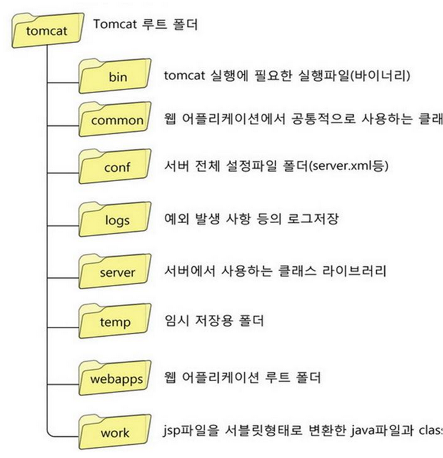
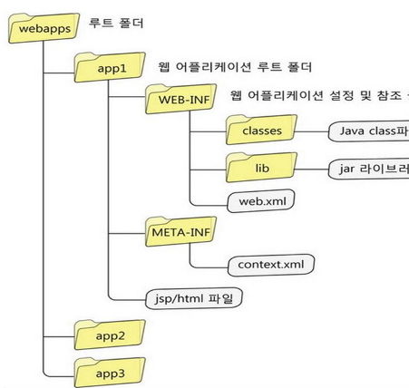

Tomcat의 기본 구조

Web Application 폴더의 구성
아래의 구조는 Application의 설정에 따라 언제든지 변경될 수 있기 때문에, 가장 기본 적인 경우의 사례로 들었다.

-
*.html, *.jsp 등 웹 어플리케이션에서 클라이언트 브라우저로 전송이 되는 HTML과 JSP 페이지에 대해서 사용이 가능하다. 정적인 문서 보다는 동적인 페이지 생성 시에 활용된다.
대규모 어플리케이션에서는 서브 디렉토리 체계로 나누어 놓을 수 있습니다.
그러나 규모가 작은 어플리케이션이라면 보통은 하나의 디텍토리에서 전체를 관리하는 것이 보다 단순하고 쉽습니다.
-
/WEB-INF/web.xml 웹 어플리케이션의 웹 어플리케이션 배치 설명자 Web Application Deployment Descriptor.
서블릿과 웹어플리케이션을 구성하는 다른 컴포넌트들을 설명하고, 각종 초기화 파라미터 들과 서버기능을 활용하기 위한 컨테이너가 관리하는 보안 제한 구역을 지정하는 XML 파일입니다.
-
/WEB-INF/classes/ 이 디렉토리에는 웹 어플리케이션에서 사용하는 모든 자바 파일이 들어있습니다.
서블릿과 비서블릿 클래스 파일들이며 jar 형태로 묶여있지 않은 것입니다.
패키지가 선언된 클래스라면 /WEB-INF/classes/를 기준으로 패키지 디렉토리를 만들어 구성하면 됩니다.
예를 들어 클래스명이 com.mycompany.mypackage.MyServlet 라면 파일의 저장 경로는 /WEB-INF/classes/com/mycompany/mypackage/MyServlet.class이 됩니다.
-
/WEB-INF/lib/ 이 디렉토리에는 웹어플리케이션에서 사용하는 자바 클래스 파일을 포함하는 JAR 파일들이 위치합니다.
외부 클래스 라이브러리나 JDBC 드라이버 같은 것입니다.
Tomcat 설정의 이해
<!-- server.xml 의 root element, server의 shutdown port를 지정 함 -->
<Server port="8005" shutdown="SHUTDOWN">
| <!-- server는 1개 이상의 service를 가질 수 있지만, 보통은 server.xml을 분리해서 관리-->
+---<Service name="Catalina"> <!-- service는 독립적인 톰캣의 서비스 이다. -->
| <!-- Connector Client와 요청을 주고 응답을 받는 Interface이다. -->
+---<Connector port="8080" protocol="HTTP/1.1">
| <!-- Connector 에는 HTTP와 AJP등이 있다. -->
+---<Connector port="8009" protocol="AJP/1.3" > <!-- Apache Jserv Protocol -->
| <!-- Engine은 적절한 Host로 처리를 넘기는 역할을 한다. -->
+---<Engine name="Catalina" defaultHost="localhost">
| <!-- Realm, Valve Component를 이용하면 Database연결, Single Sing On, Access Log등 부가기능을 이용 할 수 있다. -->
+---<Realm>
|
+---<Valve>
|
+---<Logger>
| <!-- 가상 호스트를 정의한다. -->
+---<Host appBase="webapps">
| <!--가상호스트에서 동작하는 하나의 웹 어플리케이션 이다. -->
+---<Context path="" docBase="/was/tomcat7-pms1/webapps">
|
+---<Valve>
|
+---<Realm>
|
+---<Logger>
-
1. Server 엘리먼트
Tomcat 서버 구성 요소의 정의 부분이다. 기본 값은 <server port=”8005” shutdown=”shutdown” > 로 되어 있으며, 포트 8005를 감시하고 shutdown 명령어를 접수하도록 설정되어 있다. 서버에서는 복수의 서비스를 관련 지울 수 있다.
-
2. Service 엘리먼트
Tomcat service 구성 요소를 정의하고 있다. <service>는 뒤에 기술 할 <Engine>과 그것에 관련된 모든 <Connector>를 그룹화 한 것이다. 기본 값은 <Service name=”Catalina” >로 되어 있다. (name 으로 “Tomcat-Standalone” 설정하는 경우도 있음 )
Name : Catalina라고 하는 이름으로 서비스가 정의되어 있고, 에러 로그 및 관리
툴은 이 이름으로 식별한다. 하나의 서버에 복수의 서비스를 정의하는 경우,
Name 속성을 기입할 필요가 있다.
<Service> 는 <Engine> 과 하나 이상의 <Connector>와 관련 짓는 것이 가능하다. <Service>와 <Enging>의 관계는 1:1
-
3. Engine 엘리먼트
<Engine>은 servlet 컨테이너의 인스턴스를 표시하며, <Connector>로부터 보내진 요구를 처리한다. <Engine name=”Catalina” defaultHost=”localhost” >
Name : <Engine>의 이름을 표시하며, 에러 로그 및 관리 툴은 이 이름으로 <Engine>을 식별한다.
Defaulthost : server.xml에 정의되어 있지 않은 <Host>에 요구가 있을 경우 발송되는 가상호스트를 지정한다. <Engine>에는 하나 이상의 <Host>가 관련 지어져 있다.
-
4. Connector 엘리먼트
요구를 <Engine>에 건네 주는 역할을 하는 것이 <Connector>다. <Serviced>는 하나 이상의 <Connector>를 가질 필요 있다.
사용자는 HTTP또는 HTTP/SSL 등 여러가지 방법으로 <Engine>에 요구를 보낸다. 이것들의 접속 요건 처리는 <Connector> 구성요소에 맡겨진다.
각 프로토콜에 복수의 <Connector>를 갖는 것으로서 어떤 접속에서 요구가 보내져와도 <Engine>이 동일하게 처리하고, 응답을 <Connector>에 맡길 수 있다.
tomcat에는 몇 개의 표준 <Connector>가 탑재되어 있으며, 기본 값은 HTTP1.1 <Connector>와 AJP<Connector>가 준비 되어 있다.
-
5. DefaultContext
모든 <Context> 공통의 정의부, 기본적으로 설정되어 있지 않다.
-
6. Realm 엘리먼트
보안을 위해 role명과 사용자명, 비밀번호의 맵핑을 외부의 데이터베이스로부터 가져오는 장치다.
Tomcat은 UserDataBase, Memory, JNDI 등 몃개의 <Realm>을 가지고 있다.
각 Realm의 차이는 어디로부터 정보를 가져왔는가의 차이밖에 없다. 기본값으로는 UserDataBase 이외의 Realm 은 주석 처리되어 무효로 되어 있다.
-
7. Logger 엘리먼트
로그 파일으 작성 방법을 설정한다. <Logger>는 server.xml 구조에서 보듯이 <Engine>레벨에서 설정할 수 있다.
<Logger className=”org.apache.catalina.logger.FileLogger”
Prefix=”sever-log.” Suffix=”.txt”
timestamp=”true” >
위의 예는 tomcat의 FileLogger클래스를 사용. Prefix, suffix, timestamp 속성에서 로그 파일명을 정의하고 있다.
이 경우, 로그 파일은 [Sever-log.2008_08.txt] 과 같은 형식으로 $CATALINA_HOME/log 디렉토리에 출력된다.
-
8. Host 엘리먼트
<Engine>에 관련된 가상 호스트를 정의한다. 기본값으로 다음과 같이 되어 있다.
<Host name-“localhost” appBase=”webapps” unpackWARs=”true” xmlValidation=”false” xmlNamespaceAware=”false” >
가상 호스트 명을 “localhost”로 설정하고 appBase 속성에서 어플리케이션이 탑재되어 있는 디렉토리를 “webapps”로 설정하고 있다.
별도로 unpackWARs에서는 WAR 파일을 전개하고 나서 실행할 것인지의 여부를 autoDeploy 속성을 tomcat이 기동 중에 웹 어플리케이션을 배치한 경우에 자동으로 읽어드릴 것인지의 여부를 설정할 수 있다.
-
9. Value 엘리먼트
Tomcat의 특유 기능이다. <Value>는 상위 구성요소로의 필터 처리를 담당한다.
<Enging>, <Host>, <Context> 와 관련 짓는 것이 가능하다.
또, Tomcat에는 표준으로 다음과 같은 몇 개의 <Value>가 준비되어 있다.
Catalina 설정
톰캣의 catalina.sh 파일에는 다양한 설정이 존재한다. catalina.sh 파일에는 자바 옵션 설정 및 톰캣 로그 경로 등 각종 설정을 저장할 수 있다. 이 때문에 설정 변경시 실수가 발생할 가능성이 높다.
만약 톰캣 버전이 업그레이드 되거나 서버 이전이 되는 경우 설정된 옵션을 반영하기 위해 조심히 추출 해야한다. 그래서 추가 옵션을 설정하는 또다른 방법으로 bin 디렉토리 하위의 setenv.sh 파일을 생성하고
추가 커스텀 옵션을 설정할 수 있다.
# 아래와 같이 catalina.sh이 실행될 때 setenv.sh 파일의 옵션을 등록하게 된다.
# Ensure that any user defined CLASSPATH variables are not used on startup,
# but allow them to be specified in setenv.sh, in rare case when it is needed.
CLASSPATH=
if [ -r "$CATALINA_BASE/bin/setenv.sh" ]; then
. "$CATALINA_BASE/bin/setenv.sh"
elif [ -r "$CATALINA_HOME/bin/setenv.sh" ]; then
. "$CATALINA_HOME/bin/setenv.sh"
fi
출처: https://lucaskim.tistory.com/37 [Lucas Kim]
setenv.sh 파일에 설정하는 기본적인 옵션들
JAVA_OPTS=$JAVA_OPTS " -Dfile.encoding=UTF-8 -server -Xms1024m -Xmx1024m -XX:NewSize=384m -XX:MaxNewSize=384m -XX:PermSize=128m -XX:MaxPermSize=128m"
JAVA_OPTS=$JAVA_OPTS " -XX:-HeapDumpOnOutOfMemoryError -XX:HeapDumpPath=$CATALINA_HOME/logs"
JAVA_OPTS=$JAVA_OPTS " -XX:ParallelGCThreads=2 -XX:-UseConcMarkSweepGC"
JAVA_OPTS=$JAVA_OPTS " -XX:-PrintGC -XX:-PrintGCDetails -XX:-PrintGCTimeStamps -XX:-TraceClassUnloading -XX:-TraceClassLoading"
JMX_OPTS=" -Dcom.sun.management.jmxremote \
-Dcom.sun.management.jmxremote.authenticate=false \
-Djava.rmi.server.hostname=${HOSTNAME} \
-Dcom.sun.management.jmxremote.ssl=false "
CATALINA_OPTS=" ${JMX_OPTS} ${CATALINA_OPTS}"
출처: https://lucaskim.tistory.com/37 [Lucas Kim]
- CATALINA_OPTS : start, run, debug 명령어 구동시 사용되는 자바 런타임 옵션에 해당한다. 톰캣 자체에서만 사용되는 옵션들만 포함되며 중지 프로세스, 버전 명령 등으로는 사용해서는 안된다.
- JAVA_OPTS : 명령이 실행될 때 사용되는 자바 런타임 옵션이다. 톰캣에 의해서 사용가능하고 중비 프로세스, 버전 명령에도 사용된다.